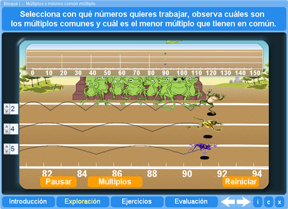
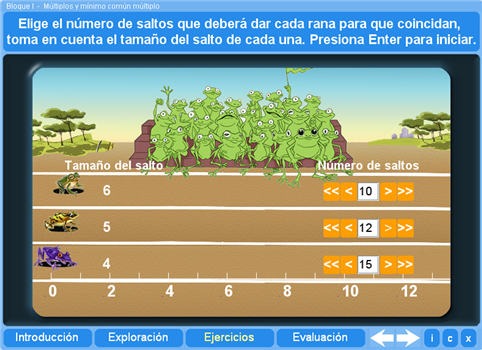
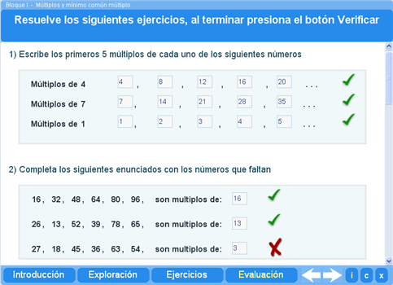
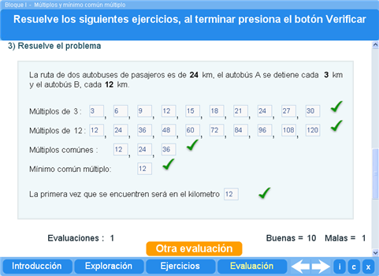

Objetivo
Obtener los múltiplos de un número y aprender a identificar el mínimo común múltiplo de dos o tres números dados.
Instrucciones generales
Se puede navegar entre los apartados con el menú de la parte inferior. Este menú aparece a lo largo de todo el interactivo y conserva su funcionalidad.

También se puede navegar por las escenas por medio de las flechas de navegación que aparecen en el lado inferior derecho del interactivo. Dentro de los apartados Exploración y Ejercicios es necesario utilizar estas flechas para acceder a las escenas sucesivas de dichos apartados.

En la parte inferior derecha del interactivo se encuentran los siguientes botones:
| Muestra la documentación del interactivo. | |
| Despliega los créditos correspondientes a este interactivo. | |
| Cierra el interactivo. |
Contenidos
Introducción
Presenta los múltiplos de uno, dos o tres números que el alumno escoje. En Además el programa presenta los múltiplos comunes.

Exploración
Mediante la simulación de una carrera de ranas se presentan los múltiplos y el mínimo múltiplo común de tres números.

Ejercicio
Se pide al estudiante que obtenga el mínimo común múltiplo de tres números. Mediante la simulación de una carrera de ranas se comprueba si su respuesta fue correcta.

Evaluación
Para evaluar lo aprendido se le presentan al alumno tres preguntas. La primera le pide escribir los múltiplos de tres números. La segunda le pide indicar de qué número son múltiplos los números de una lista.

Finalmente se le plantea un problema y se le pide encontrar el mínimo común múltiplo de dos números para resolverlo.

Cada vez que los alumnos resoluelven la evaluación se presenta el número de aciertos y errores, las evaluaciones realizadas y la media de todas ellas.
| Los materiales aquí presentados utilizan el applet Descartes Web 2.0. | |

|
Los contenidos de esta unidad didáctica están bajo una licencia de Creative Commons. |